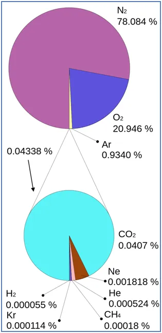
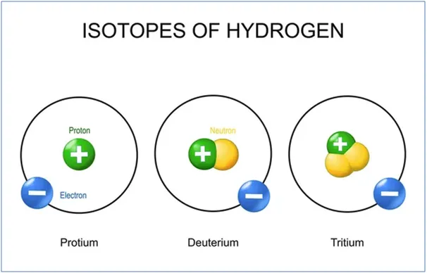
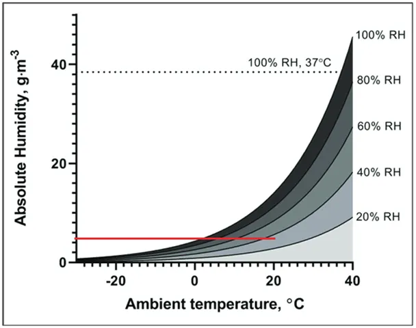

Dlaczego jest tak sucho skoro jest tak mokro a wirusy tak łatwo rzucają się na nasze biedne komórki skórki?
Woda ma zdolność występowania w różnych stanach skupienia, jako lód, ciecz lub gaz. W tej trzeciej postaci jest niewidzialna i zachowuje się podobnie jak inne gazy atmosferyczne, jej cząsteczki (H2O) beztrosko zderzają się z cząsteczkami innych niewidzialnych gazów, głównie azotem, którego jest aż 78% w powietrzu, potem z tlenem 21 % atmosfery i innymi śladowymi gazami. Im wyższa temperatura, tym cząstki poruszają się szybciej a ich kolizje są silniejsze. Zwykle to wzajemne odbicia, ale w mieszance gazowej atmosfery mamy też promieniowanie słoneczne i kosmiczne. Promieniowanie słoneczne dosłownie nie widzi atmosfery i przenika swobodnie, nie nagrzewając powietrza. Jest to trudny fakt dla wyznawców klimatyzmu, ale to podstawy fizyki ze szkoły podstawowej. Promienie słoneczne bez przekazywania energii atmosferze docierają do powierzchni Ziemi i nagrzewają oceany i kontynenty.
Dopiero ciała nieprzeźroczyste energię słoneczną zamieniają w ciepło i za pośrednictwem promieniowania podczerwonego, niewidzialnego dla ludzkiego oka, ogrzewają powietrze i Kosmos. Inaczej bywa z promieniowaniem kosmicznym, jest jego sporo odmian, ale często ma ono charakter destrukcyjny i rozbija cząsteczki na jony, czyli naelektryzowane cząsteczki, w tym pojedyncze atomy a czasem tworzy nawet izotopy, czyli odmiany pierwiastka wzbogaconego o nowe neutrony w jądrze atomu, jak np. opisany na rysunku „Tritium”, czyli wodór masie atomowej 3.

Gazowe cząstki wody zamienią się w ciecz, czyli w krople, gdy będzie ich odpowiednio dużo i temperatura będzie odpowiednio niska. Najłatwiej będzie to wytłumaczyć tym, którzy noszą okulary. Gdy wchodzimy w zimny dzień z ulicy do mieszkania na zimnych przedmiotach, np. na okularach błyskawicznie powstaje warstwa wody. Podobnie, gdy ciepłym powietrzem z płuc chuchniemy na zimną szybę.

Zimą, gdy jest zimno w atmosferze jest bardzo mało wilgoci, bo zostaje ona szybko skroplona i znamy ją z wilgotnych chodników, drzew, czy zalegającego śniegu. Bo zdolność do „rozpuszczania” się wody w atmosferze maleje wraz ze spadkiem temperatury. Cząsteczki mają na tyle mało energii, że podczas zderzenia ze sobą nie odbijają się, lecz sklejają, tworząc szybko krople i np. deszcz. Jest to uproszczony opis procesu, ale zgodny co do zasady. O katalitycznej funkcji jonów kwasów i roli wybuchów gwiazd w Kosmosie w powstawaniu chmur na Ziemi innym razem… („Atmospheric ionization and cloud radiative forcing.” Henrik Svensmark)

Tak więc zimą w atmosferze jest mało wilgoci, bo osiadła ona w postaci cieczy. Mówimy tu o bezwzględnej wilgotności (absolute humidity), czyli ilości pary wodnej w gramach na metr sześcienny powietrza (g/m^3). Jest oczywiście też coś takiego jak wilgotność względna, czyli ile mamy wody, przy danej temperaturze, w % w stosunku do ilości w jakiej nastąpi skroplenie, ten stan końcowy to 100% nasycenia.
W naszych mieszkaniach mamy de facto to samo powietrze co za oknem, tylko podgrzane. Wykres ostatni pokazuje nam, że jeśli na ulicy jest 0 st. C, i pada lub jest mokro, to mamy w powietrzu coś ok. 5 gram wody na 1 m^3. Gdy to powietrze w mieszkaniu ogrzewamy do 20 st. C jego względna wilgotność spada do ok. 35%, czyli susza. Sucha jest nasza skora, sucha ziemia w doniczkach, szybko nam wysychają śluzówki i wtedy bakterie i wirusy (jeśli istnieją) mogą swobodnie wnikać do tkanek przez suche pory naszych zatok. Dla zdrowia zimą nawilżamy i schładzamy mieszkanie. Spanie w ciepłych pomieszczeniach zimą to szukanie choroby. Zamykanie grzejników i przykrywanie ich mokrymi ręcznikami na noc to przeciwdziałanie niekorzystnej sytuacji. Spanie przy otwartym oknie pod dobrą kołdrą to już prawie ideał.
Odwrotnie będzie latem, mimo dużej ilości wody w powietrzu będzie sucho, dopiero zimny front wyciśnie z suchego powietrza wodę i uczyni je mokrym od deszczu.
Paweł Klimczewski